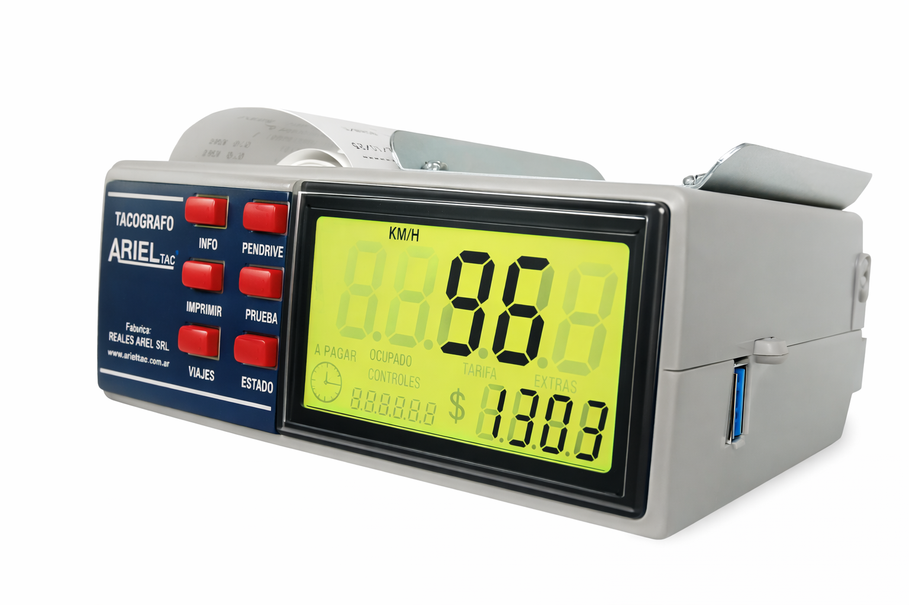
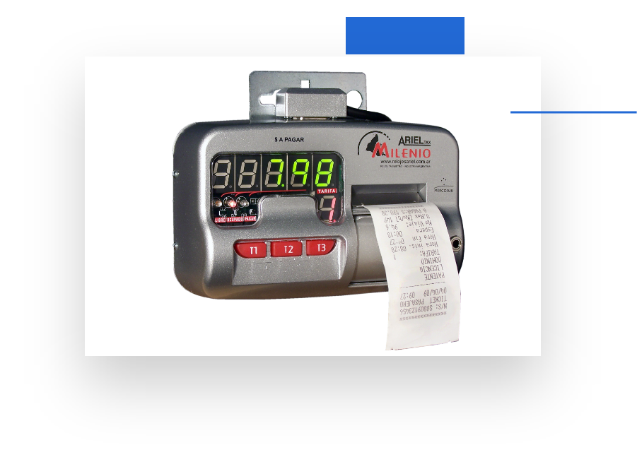
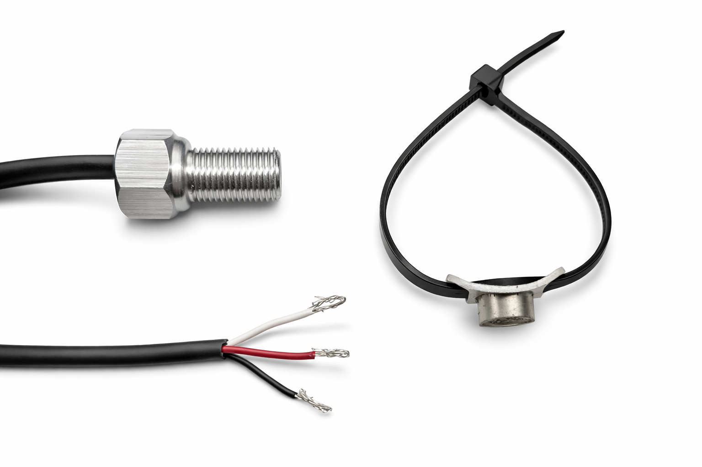
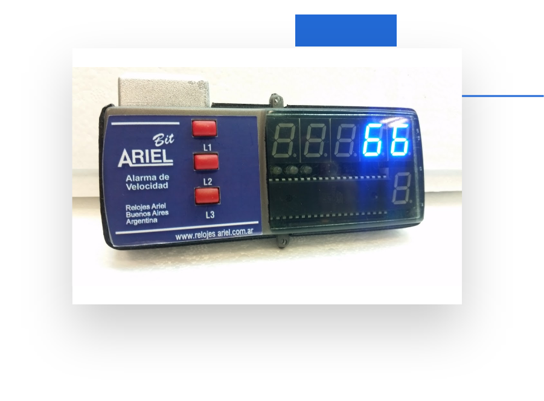
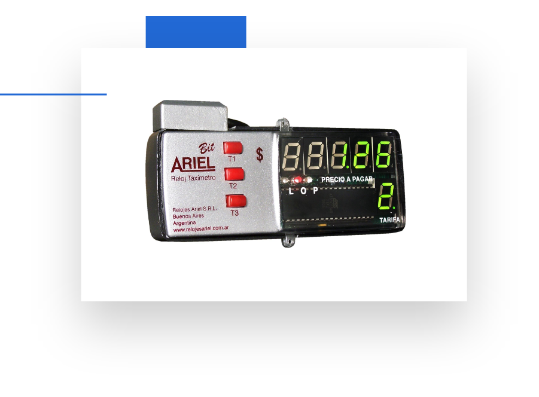
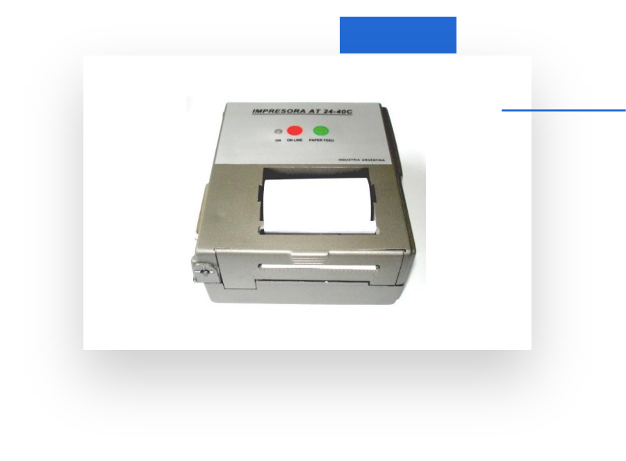

Somos una empresa dedicada a la fabricación y venta de equipos de control y medición.
Ver productosIniciamos nuestra actividad en el año 1988.
Nos dedicamos al diseño, fabricación y venta de relojes taxímetros.
Brindamos soluciones serias y de calidad al servicio del taxista.
Garantizamos la venta de relojes taxímetros y tacógrafos homologados.

El tacógrafo digital ArielTac es ideal para monitoreo y control en el transporte, permitiendo registrar:

Compacto, liviano, de uso muy simple, tiene la bandera LED Ultra Luminosa incorporada (Homologada bajo Disposición 606/2010). Incluye impresora térmica y cuenta con display de gran luminosidad (Homologada bajo Disposición Disposicion es 22/2009).

Interfaces y cableado compatible con la linea de productos Relojes Ariel.

La alarma cuenta con un display que muestra la velocidad instantánea.
Posee 3 limites que son programables, permitiendo cambiar el límite de calle a avenida ciudad o al limite de ruta o autopista, de esta forma logra ser un dispositivo muy versatil.
Es un dispositivo adaptable, con total precisión, a cualquier vehículo. Los valores de los contadores son almacenados en una memoria al desconectar el instrumento. No requiere ningún tipo de batería, ni mantenimiento.

Impresora térmica con led de indicador de estado. La impresora dispone de dos botones: Botón de Avance de papel y un botón para activar el Modo economizador.
Dirección: Av. Nazca 1249, CABA, Argentina
Horarios: Lunes a Viernes de 08:00 a 18:00 hs
Horarios: Sabados 08:00 a 13:00 hs
Completá el formulario y un asesor te contactará a la brevedad.